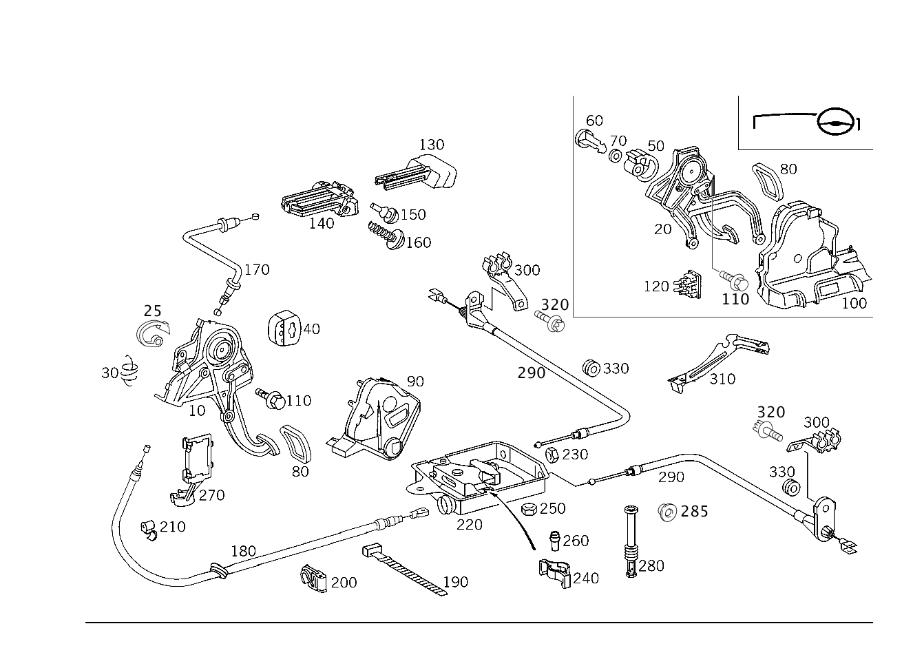

| № | Артикул | Название | Кол. | Примечание |
|---|---|---|---|---|
| 10 | A 220 420 12 84 | Стояночный тормоз (PARKING BRAKE) | 1 | |
| 10 | A 203 420 16 84 | Стояночный тормоз (PARKING BRAKE) | 1 | |
| 10 | A 203 420 16 84 | Стояночный тормоз (PARKING BRAKE) | 1 | |
| 20 | A 203 420 13 84 | Стояночный тормоз (PARKING BRAKE) | 1 | |
| 20 | A 203 420 13 84 | Стояночный тормоз (PARKING BRAKE) | 1 | |
| 25 | A 202 427 02 28 | - Фиксатор (NOTCH) | 1 | ЧЕРНЫЙ |
| 25 | A 203 427 03 28 | - Фиксатор (NOTCH) | 1 | СЕРЫЙ |
| 30 | A 202 993 20 10 | - Пружина растяжения (EXTENSION SPRING) | 1 | НОЖНОЙ СТОЯНОЧНЫЙ ТОРМОЗ |
| 40 | A 202 427 01 27 | - Упор (END STOP) | 1 | НОЖНОЙ СТОЯНОЧНЫЙ ТОРМОЗ |
| 50 | A 202 427 02 28 | - Фиксатор (NOTCH) | 1 | ЧЕРНЫЙ |
| 50 | A 203 427 03 28 | - Фиксатор (NOTCH) | 1 | СЕРЫЙ |
| 60 | A 202 427 07 74 | - Палец (PIN) | 1 | НОЖНОЙ СТОЯНОЧНЫЙ ТОРМОЗ |
| 70 | N 000125 008445 | - Шайба (WASHER) | 1 | НОЖНОЙ СТОЯНОЧНЫЙ ТОРМОЗ |
| 80 | A 124 427 03 82 | Чехол (COVER) | 1 | НОЖНОЙ СТОЯНОЧНЫЙ ТОРМОЗ |
| 80 | A 203 430 00 84 | Чехол (COVER) | 1 | СТОЯНОЧНЫЙ ТОРМОЗ |
| 90 | A 203 689 03 08 | Крышка (COVER) | 1 | НОЖНОЙ СТОЯНОЧНЫЙ ТОРМОЗ |
| 100 | A 203 689 06 08 | Крышка (COVER) | 1 | НОЖНОЙ СТОЯНОЧНЫЙ ТОРМОЗ |
| 110 | N 914130 008104 | Винт | 2 | НОЖН. СТОЯН. ТОРМОЗ НА СТОЙКЕ ПЕРЕД. СТЕНКИ; M8X22 |
| 110 | N 000000 004775 | Винт с 6-гранной головкой (HEXAGON HEAD BOLT) | 2 | НОЖН. СТОЯН. ТОРМОЗ НА СТОЙКЕ ПЕРЕД. СТЕНКИ; M8X22 |
| 110 | N 914130 008104 | Винт | 2 | НОЖН. СТОЯН. ТОРМОЗ НА ТУННЕЛЕ И ПЕРЕГОРОДКЕ; M8X22 |
| 110 | N 000000 004775 | Винт с 6-гранной головкой (HEXAGON HEAD BOLT) | 2 | НОЖН. СТОЯН. ТОРМОЗ НА ТУННЕЛЕ И ПЕРЕГОРОДКЕ; M8X22 |
| 120 | A 202 427 00 73 | предохранитель (SECURING) | 1 | НОЖНОЙ СТОЯНОЧНЫЙ ТОРМОЗ |
| 130 | A 203 427 06 20 | РУЧКА | 1 | СРАБАТЫВАНИЕ ДЛЯ СТОЯНОЧ. ТОРМОЗА |
| 140 | A 203 420 00 77 | Направляющая (GUIDE) | 1 | СРАБАТЫВАНИЕ ДЛЯ СТОЯНОЧ. ТОРМОЗА |
| 150 | A 202 427 00 27 | - Упор (END STOP) | 1 | СРАБАТЫВАНИЕ ДЛЯ СТОЯНОЧ. ТОРМОЗА |
| 160 | N 000000 003242 | Винт с плоск.гол. (PAN HEAD SCREW) | 2 | НАПРАВЛЯЮЩАЯ К ПЕРЕДНЕЙ ПАНЕЛИ; 5X20 |
| 170 | A 203 420 04 85 | Тормозной трос (BRAKE CABLE) | 1 | СРАБАТЫВАНИЕ ДЛЯ СТОЯНОЧ. ТОРМОЗА |
| 170 | A 203 420 05 85 | Тормозной трос (BRAKE CABLE) | 1 | СРАБАТЫВАНИЕ ДЛЯ СТОЯНОЧ. ТОРМОЗА |
| 180 | A 203 420 01 85 | Тормозной трос (BRAKE CABLE) | 1 | НОЖНОЙ СТОЯНОЧНЫЙ ТОРМОЗ |
| 180 | A 203 420 10 85 | Тормозной трос (BRAKE CABLE) | 1 | НОЖНОЙ СТОЯНОЧНЫЙ ТОРМОЗ |
| 190 | A 000 995 90 06 | Кабельная стяжка (PARTS KIT, CABLE STRAP) | 1 | ТРОС. ПРИВОД СТОЯН. ТОРМ.; 310X5mm |
| 200 | A 000 995 57 20 | Держатель кабеля (CABLE BRACKET) | 3 | НАПРАВЛ. ТОРМОЗ. ТРОСА |
| 200 | A 000 995 57 20 | Держатель кабеля (CABLE BRACKET) | 4 | НАПРАВЛ. ТОРМОЗ. ТРОСА |
| 210 | A 000 995 50 20 | Крепежный хомут (FASTENING CLAMP) | 2 | НА ПЕРЕГОРОДКЕ |
| 220 | A 203 420 04 38 | Регулировочный механизм (ADJUSTER) | 1 | НОЖНОЙ СТОЯНОЧНЫЙ ТОРМОЗ |
| 230 | N 000000 003175 | - Гайка (NUT) | 1 | НА ПОСЛЕД.РЕГУЛИР.; M8 |
| 240 | A 202 988 05 78 | - Скоба (CLAMP) | 1 | ФИКСИРУЮЩИЙ ЗАЖИМ |
| 250 | N 913023 006001 | Гайка (NUT) | 1 | ДОП. РЕГУЛИРОВКА НА БАКЕ; M6 |
| 260 | A 202 427 04 74 | Палец (PIN) | 1 | НА ПОСЛЕД.РЕГУЛИР. |
| 270 | A 203 427 02 41 | Держатель (HOLDER) | 1 | СТОЯНОЧНЫЙ ТОРМОЗ |
| 280 | A 203 427 00 12 | Направляющая трубка (GUIDE TUBE) | 1 | РЕГУЛИРОВКА |
| 280 | A 209 420 01 77 | Направляющая трубка (GUIDE TUBE) | 1 | РЕГУЛИРОВКА |
| 285 | A 002 988 52 81 | Кнопка-застежка (SNAP FASTENER) | 2 | РЕГУЛИРОВКА |
| 290 | A 203 420 02 85 | Тормозной трос (BRAKE CABLE) | 1 | ЗАДНИЙ МОСТ СЛЕВА |
| 290 | A 203 420 03 85 | Тормозной трос (BRAKE CABLE) | 1 | ЗАДНИЙ МОСТ СПРАВА |
| 300 | A 203 546 14 43 | Держатель кабеля (CABLE BRACKET) | 1 | ПРОВОДКА ЗАДН.МОСТА НА КОЛЕСН.АРКЕ СЛЕВА |
| 300 | A 203 546 14 43 | Держатель кабеля (CABLE BRACKET) | 1 | ПРОВОДКА ЗАДН.МОСТА НА КОЛЕСН.АРКЕ СПРАВА |
| 310 | A 203 546 16 43 | Держатель кабеля (CABLE BRACKET) | 1 | ЗАКРЫВ. ПАНЕЛЬ СЗАДИ |
| 320 | N 000000 001418 | Винт с 6-гр. глвк (HEXALOBULAR SCREW) | 2 | ТОРМ.ТРОС НА ДЕРЖАТ.; M8X16 |
| 330 | A 115 997 06 81 | втулка (GROMMET) | 2 | ТРОС. ПРИВОД СТОЯН. ТОРМ.; 23 MM |
Позиций: 50 · подписано на схемах: 50 · колесо — плавный зум в курсор, перетаскивание — пан, двойной клик — зум, клик по артикулу — скопировать.